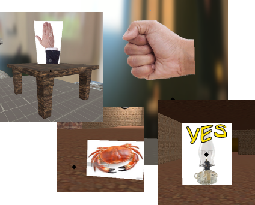
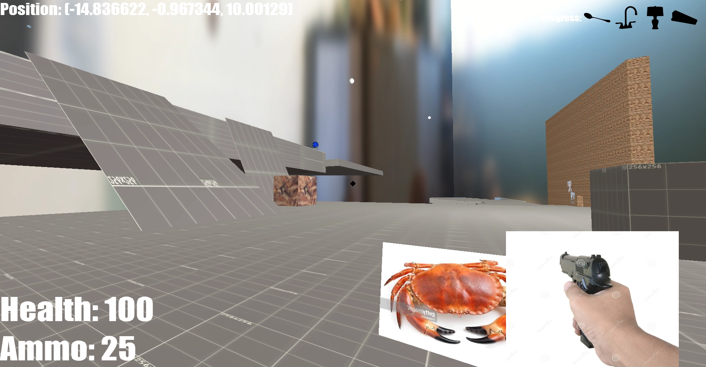
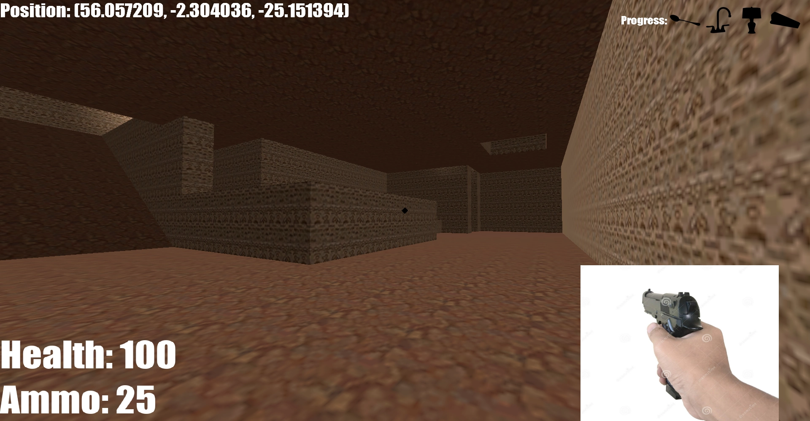

Halp Life Pi
Estimated Project Date: Late 2020-Early 2021
After Lava Survival, I decided to start messing around with 3D! I decided to create an "intentionally bad game", and a lot of what I ended up making reflects that. The game actually has quite a bit of content (a testing room and half a level) for what it is, and I'm actually quite proud of what I was able to do, even if it isn't much in the grand scheme of things.
In addition to the "intentionally bad game" part, I also wanted to create a somewhat surreal and liminal atmosphere (see: Wet Dry World from Super Mario 64). I think I did a decent job, but I would like to revisit that vibe in the future.
I did learn a lot from making this! I've never made (relatively) simple game mechanics like timed switches and moving platforms, so those were firsts for me. This was also pretty much my first foray into the world of 3D, which was very exciting! At this point, I've had a lot more experience working with 3D, so I feel like if I made this project today, it would turn out much better. But, I feel like that's the case with pretty much any project.

Downloads
Playable builds of this prototype are hosted directly on this site! They used to contain copyrighted material,
which has been removed for paranoia reasons safety. The currently available downloads are:
[Download] Windows x86 (.7z, 30MB)
[Download] Linux x86 (.7z, 27.7MB)
Extras
The source code is also available! It's a Godot 3 project, so be sure to open it in the latest version of Godot 3 (3.6 at time of writing) and not Godot 4.

